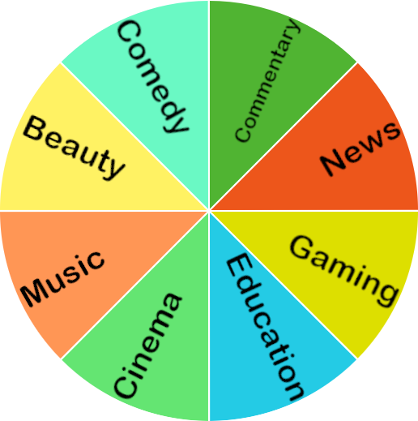

YouTube's algorithm is trying it's best. BUT IT'S BEST ISN'T GOOD ENOUGH. I'm here to fix that.
We're gonna start by dividing all content uploaded on YouTube into categories.

This isn't meant to be an exhaustive list of genres on YouTube, nor is it meant to accurately represent the relationship between each genre. This is just for demonstration purposes.
In this graph, each genre is placed in a specific location. The total opposite of a genre (the "opposite of a genre" is defined as a genre that has the least viewers in common with the starting genre) is placed directly opposite to said genre.
When videos are recommended, they are recommended in groups of 10. Of those 10 videos, 5 would be from the same genre (called slices from here on forward), 3 from adjacent slices, and 2 from randomly selected slices.
Of the 5 videos recommended from the same slice, 2 come from the same channel, 2 videos from the channels which have very similar audiences, and 1 video from a randomly selected channel within the same slice.